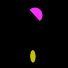
(1)
A cyan square is to the left of a magenta shape.
A cyan triangle is to the left of a cyan shape.
A square is to the right of a magenta square.
A magenta square is to the left of a cyan shape.
A square is to the right of a square.
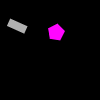
(2)
A cross is to the right of a blue cross.
A red shape is to the right of a blue cross.
A red shape is to the left of a blue cross.
A blue cross is to the left of a red cross.
A red shape is to the right of a blue cross.
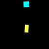
(3)
A blue shape is to the right of a blue shape.
A blue rectangle is to the left of a blue triangle.
A blue shape is to the right of a blue triangle.
A blue triangle is to the left of a blue shape.
A blue triangle is to the right of a blue rectangle.
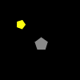
(4)
A cyan rectangle is below a green rectangle.
A cyan ellipse is above a cyan rectangle.
A cyan ellipse is above a cyan rectangle.
A cyan shape is above a rectangle.
A cyan ellipse is above a rectangle.

(5)
A red cross is to the right of a green shape.
A green ellipse is to the left of a red shape.
A green ellipse is to the left of a red cross.
A red shape is to the right of a green shape.
A red shape is to the left of an ellipse.
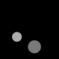
(6)
A red rectangle is below a blue ellipse.
A cross is above an ellipse.
A red shape is above an ellipse.
A blue ellipse is below a red ellipse.
A blue ellipse is below a blue rectangle.

(7)
A triangle is to the right of an ellipse.
A triangle is to the left of a red ellipse.
A cyan shape is to the right of a red ellipse.
A red square is to the left of a green triangle.
A green triangle is to the left of an ellipse.
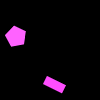
(8)
A gray triangle is to the right of a magenta ellipse.
A green ellipse is to the left of a magenta triangle.
An ellipse is to the left of a magenta shape.
A green ellipse is to the right of a magenta shape.
A triangle is to the left of a magenta ellipse.
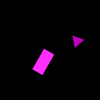
(9)
A blue semicircle is to the left of a magenta rectangle.
A semicircle is below a magenta rectangle.
A blue semicircle is below a magenta rectangle.
A blue semicircle is below a magenta shape.
A rectangle is above a semicircle.
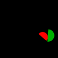
(10)
A red pentagon is above a gray pentagon.
A red circle is below a red pentagon.
A red pentagon is above a red circle.
A yellow shape is below a red shape.
A red shape is above a triangle.
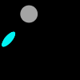
(11)
A semicircle is above a yellow square.
A yellow shape is below a semicircle.
A gray semicircle is above a square.
A square is below a semicircle.
A semicircle is below a yellow shape.
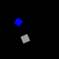
(12)
A blue rectangle is to the left of a magenta shape.
A triangle is to the right of a blue rectangle.
A magenta triangle is to the left of a blue rectangle.
A magenta rectangle is to the left of a magenta shape.
A yellow triangle is to the right of a blue shape.
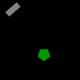
(13)
A magenta pentagon is to the left of a square.
A red pentagon is to the right of a pentagon.
A pentagon is to the left of a magenta square.
A pentagon is to the left of a magenta square.
A magenta pentagon is to the left of a square.
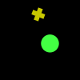
(14)
A cyan circle is to the right of a triangle.
A cyan circle is to the right of a magenta triangle.
A circle is to the right of a magenta triangle.
A cyan triangle is to the right of a magenta shape.
A circle is to the right of a magenta shape.
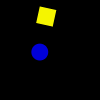
(15)
A cyan cross is above a rectangle.
A cyan shape is below a green rectangle.
A green rectangle is below a cyan cross.
A rectangle is above a cyan shape.
A cyan square is above a rectangle.
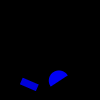
(16)
A green rectangle is above a gray cross.
A cross is below a green rectangle.
A green rectangle is above a gray cross.
A rectangle is above a gray cross.
A gray rectangle is below a green rectangle.
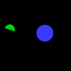
(17)
A green circle is above a magenta shape.
A rectangle is above a green circle.
A magenta rectangle is above a green circle.
A rectangle is above a green shape.
A magenta rectangle is above a green cross.
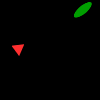
(18)
A magenta shape is below an ellipse.
A cyan ellipse is below a magenta cross.
A gray shape is below an ellipse.
A magenta cross is below a cyan shape.
A cyan shape is above a magenta cross.
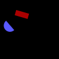
(19)
A green shape is above a semicircle.
A gray shape is below a gray pentagon.
A gray pentagon is above a gray shape.
A pentagon is above a semicircle.
A gray shape is below a gray shape.
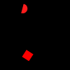
(20)
A green shape is to the right of a red cross.
A red cross is to the left of a green triangle.
A red cross is to the right of a green triangle.
A red cross is to the left of a green triangle.
A red cross is to the left of a green shape.
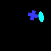
(21)
A red ellipse is above a green triangle.
A green triangle is below a red ellipse.
A square is below a red shape.
A green ellipse is above a green triangle.
A green shape is below an ellipse.
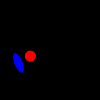
(22)
A magenta triangle is to the left of a yellow triangle.
A yellow shape is to the right of a circle.
A rectangle is to the right of a magenta triangle.
A magenta triangle is to the right of a yellow triangle.
A yellow shape is to the right of a cyan shape.
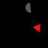
(23)
A blue rectangle is above a pentagon.
A magenta pentagon is below a magenta shape.
A magenta rectangle is above a pentagon.
A magenta triangle is above a magenta shape.
A triangle is above a magenta shape.
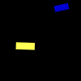
(24)
A circle is below a red cross.
A red shape is above a red shape.
A cross is above a red circle.
A cross is above a circle.
A circle is below a cyan square.
(25)
A green square is above a green cross.
A magenta cross is above a cross.
A magenta pentagon is above a cross.
A gray cross is below a magenta cross.
A green circle is above a cross.
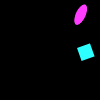
(26)
A cross is to the left of a blue circle.
A blue rectangle is to the right of a blue shape.
A blue semicircle is to the left of a blue circle.
A blue shape is to the right of a semicircle.
A blue semicircle is to the left of a blue shape.
(27)
A gray ellipse is below a magenta square.
A square is above a gray shape.
An ellipse is below a magenta square.
A gray ellipse is below a square.
An ellipse is below a green ellipse.
(28)
A blue shape is above a red shape.
A red square is above a red shape.
A red circle is above a red square.
A red square is below a red shape.
A red square is above a red shape.
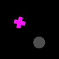
(29)
A yellow shape is to the right of a red triangle.
A triangle is to the right of an ellipse.
A triangle is to the left of an ellipse.
A green cross is to the right of a red shape.
A green triangle is to the left of a yellow ellipse.
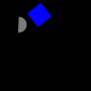
(30)
A blue shape is below a gray semicircle.
A gray rectangle is below a cross.
A semicircle is above a rectangle.
A semicircle is above a gray rectangle.
A gray semicircle is above a gray rectangle.
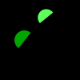
(31)
A magenta shape is below a yellow shape.
An ellipse is below an ellipse.
A yellow ellipse is below a magenta ellipse.
A yellow ellipse is above a magenta ellipse.
An ellipse is below a magenta ellipse.
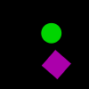
(32)
A blue triangle is to the right of a red shape.
A triangle is below a red shape.
A blue triangle is above a cross.
A blue shape is below a red cross.
A red cross is above a blue triangle.
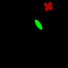
(33)
A green triangle is below a red shape.
A red pentagon is above a green triangle.
A red semicircle is above a green shape.
A red semicircle is above a green triangle.
A green triangle is below a red semicircle.
(34)
A green shape is above an ellipse.
A yellow ellipse is below a yellow shape.
A semicircle is above a yellow ellipse.
A yellow semicircle is above a yellow ellipse.
A gray semicircle is below a yellow shape.
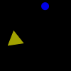
(35)
A blue pentagon is to the right of a gray triangle.
A blue pentagon is to the right of a triangle.
A gray triangle is to the right of a blue pentagon.
A blue pentagon is to the left of a triangle.
A triangle is to the left of a blue shape.
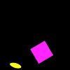
(36)
A triangle is to the right of a red semicircle.
A red semicircle is to the left of a triangle.
A gray shape is to the left of a red shape.
A triangle is to the right of a red shape.
A red shape is to the right of a red shape.
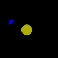
(37)
A red semicircle is to the left of a red shape.
A red semicircle is to the right of a red rectangle.
A red rectangle is to the left of a semicircle.
A blue rectangle is to the left of a red rectangle.
A red semicircle is to the left of a red rectangle.
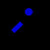
(38)
A red shape is above a yellow square.
A yellow square is below a yellow pentagon.
A yellow square is below a yellow shape.
A yellow pentagon is above a yellow shape.
A yellow square is below a yellow shape.
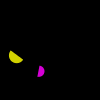
(39)
A magenta shape is above a blue shape.
A blue shape is above a cyan shape.
A blue triangle is above a blue shape.
A magenta triangle is below a blue triangle.
A blue pentagon is above a blue triangle.
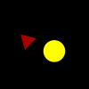
(40)
A magenta semicircle is to the left of a magenta semicircle.
A yellow shape is to the left of a magenta semicircle.
A blue ellipse is to the right of a magenta semicircle.
A semicircle is to the left of a magenta semicircle.
A semicircle is to the left of a magenta semicircle.
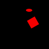
(41)
A magenta shape is to the left of a magenta semicircle.
A semicircle is to the right of a pentagon.
A magenta shape is to the left of a magenta semicircle.
A magenta shape is to the right of a magenta shape.
A magenta shape is to the right of a magenta cross.
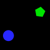
(42)
A red triangle is to the right of a yellow shape.
A cyan ellipse is to the left of a red shape.
A red circle is to the right of a red triangle.
A red triangle is to the right of a red circle.
A red shape is to the left of a red triangle.
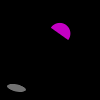
(43)
A gray cross is below a green pentagon.
A green shape is above a gray pentagon.
A pentagon is above a pentagon.
A green shape is above a gray shape.
A gray shape is below a green pentagon.
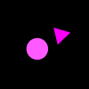
(44)
A yellow shape is above a gray semicircle.
A yellow ellipse is below a gray semicircle.
A gray semicircle is above a yellow ellipse.
A gray shape is to the right of a yellow ellipse.
A yellow ellipse is above a gray square.
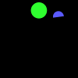
(45)
A green shape is below a cyan shape.
A cyan ellipse is above a cross.
A green cross is above an ellipse.
A cyan ellipse is above a cross.
A cyan semicircle is below an ellipse.
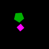
(46)
A red semicircle is below a green shape.
A green pentagon is below a semicircle.
A red semicircle is below a green pentagon.
A magenta pentagon is above a red semicircle.
A green pentagon is above a red semicircle.
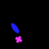
(47)
A gray shape is to the left of a magenta shape.
A rectangle is to the left of a pentagon.
A magenta rectangle is to the left of a magenta rectangle.
A magenta rectangle is to the right of a rectangle.
A magenta rectangle is to the right of a magenta rectangle.
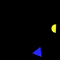
(48)
A cyan shape is to the left of a cyan semicircle.
A cyan semicircle is to the right of a cyan semicircle.
A semicircle is to the right of a semicircle.
A cyan semicircle is to the left of a cyan semicircle.
A gray shape is to the right of a cyan semicircle.
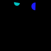
(49)
A blue triangle is to the right of a blue shape.
A blue cross is to the left of a blue triangle.
A blue triangle is above a cross.
A blue shape is to the left of a blue triangle.
A blue shape is to the left of a blue shape.
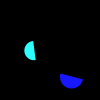
(50)
A triangle is to the left of a pentagon.
A blue shape is to the right of a pentagon.
A blue pentagon is to the right of a gray pentagon.
A blue square is to the left of a blue pentagon.
A blue pentagon is to the left of a gray shape.
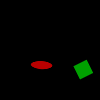
(51)
A rectangle is below a cross.
A cyan shape is to the right of a magenta cross.
A blue shape is to the right of a cyan shape.
A cyan cross is to the left of a cyan shape.
A cyan rectangle is below a cyan cross.
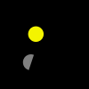
(52)
A cyan pentagon is to the left of a cyan semicircle.
A red semicircle is to the left of a cyan semicircle.
A cyan semicircle is to the right of a cyan pentagon.
A pentagon is to the left of a cyan semicircle.
A semicircle is to the right of a pentagon.
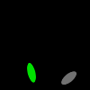
(53)
A red shape is above a magenta triangle.
A blue shape is above a triangle.
A gray shape is above a magenta shape.
A magenta triangle is below a yellow shape.
A cyan shape is below a cross.
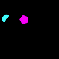
(54)
A gray circle is below a triangle.
A triangle is below a gray circle.
A gray triangle is below a triangle.
A gray circle is below a magenta shape.
A gray circle is below a magenta shape.
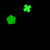
(55)
A yellow triangle is to the right of a yellow shape.
A cyan shape is to the right of a yellow semicircle.
A yellow triangle is to the right of a semicircle.
A yellow shape is to the right of a yellow semicircle.
A yellow shape is to the right of a yellow semicircle.
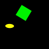
(56)
A red square is to the right of a magenta ellipse.
A red square is to the left of a blue ellipse.
A magenta ellipse is to the left of a red square.
A square is to the left of a magenta ellipse.
A red square is to the left of a magenta square.
(57)
A pentagon is above a magenta square.
A cyan pentagon is below a magenta square.
A gray shape is below a magenta square.
A gray pentagon is below a square.
A gray shape is below a magenta square.
(58)
A rectangle is above a red shape.
A blue triangle is above a red square.
A red shape is below a blue triangle.
A blue shape is above a red square.
A blue shape is above a red square.

(59)
A red rectangle is to the left of a blue rectangle.
A red shape is to the right of a blue rectangle.
A red rectangle is to the left of a gray rectangle.
A red ellipse is to the left of a rectangle.
A rectangle is to the right of a rectangle.
(60)
A magenta shape is to the left of an ellipse.
A magenta shape is to the right of a gray shape.
A gray ellipse is to the right of a magenta shape.
A magenta rectangle is to the left of a yellow shape.
A gray ellipse is to the right of a rectangle.

(61)
A gray circle is below a pentagon.
A gray circle is below a cyan shape.
A yellow semicircle is below a pentagon.
A cyan shape is above a gray shape.
A cyan shape is above a gray shape.
(62)
A cyan circle is to the left of a gray shape.
A cyan ellipse is to the left of a gray semicircle.
A gray shape is to the right of a cyan circle.
A semicircle is to the right of a cyan circle.
A semicircle is to the right of a circle.
(63)
A red rectangle is below a blue shape.
A rectangle is above a rectangle.
A red triangle is above a blue shape.
A rectangle is above a blue shape.
A blue circle is below a red rectangle.
(64)
A triangle is to the left of a gray rectangle.
A yellow shape is to the right of a gray rectangle.
A yellow rectangle is to the right of a gray rectangle.
A gray rectangle is to the right of a yellow rectangle.
A gray rectangle is to the right of a yellow shape.
(65)
A yellow shape is below a circle.
A yellow semicircle is to the left of a magenta circle.
A magenta shape is above a yellow shape.
A semicircle is below a magenta shape.
A blue semicircle is below a magenta shape.
(66)
A cyan cross is to the left of a yellow shape.
A square is to the right of a semicircle.
A cyan shape is to the left of a yellow square.
A yellow square is to the right of a cyan shape.
A cyan circle is to the left of a gray square.
(67)
A red pentagon is above a green shape.
A green pentagon is above a red shape.
A red ellipse is above a green pentagon.
A yellow shape is below a red pentagon.
A pentagon is below a pentagon.
(68)
A green ellipse is below a blue shape.
A triangle is above an ellipse.
A blue shape is below a green ellipse.
A triangle is above a green shape.
A blue ellipse is below a blue triangle.
(69)
A green shape is below a yellow rectangle.
A rectangle is below a green ellipse.
A blue semicircle is above a green shape.
A green ellipse is below a yellow rectangle.
A green ellipse is above a yellow rectangle.
(70)
A gray cross is to the right of a cross.
A gray ellipse is to the right of a yellow cross.
A semicircle is to the left of a gray cross.
A gray cross is to the left of a yellow shape.
A cyan rectangle is to the right of a cross.
(71)
A cyan shape is above a square.
A cyan square is below a cyan ellipse.
An ellipse is above a square.
A gray circle is below a cyan ellipse.
A cyan shape is above a cyan square.
(72)
A gray circle is to the left of a cyan shape.
A cyan square is to the left of a gray circle.
A cyan ellipse is to the right of a gray circle.
A cyan circle is to the right of a circle.
A cyan square is to the right of a rectangle.
(73)
A yellow rectangle is to the right of a green triangle.
A yellow shape is to the right of a triangle.
A green triangle is to the right of a yellow rectangle.
A green rectangle is to the left of a rectangle.
A green triangle is to the left of a rectangle.
(74)
A rectangle is above a semicircle.
A rectangle is above a cross.
A rectangle is above a yellow cross.
A rectangle is below a yellow shape.
A yellow cross is below a cyan shape.
(75)
A rectangle is above a cyan shape.
A yellow triangle is below a red rectangle.
A cross is above a cyan shape.
A rectangle is above a cyan shape.
A cyan rectangle is below a red shape.
(76)
A yellow shape is to the left of a gray shape.
A gray ellipse is to the right of a rectangle.
A gray rectangle is to the left of an ellipse.
A green rectangle is to the right of a gray rectangle.
A blue shape is to the right of a rectangle.
(77)
A blue triangle is below a magenta shape.
A red shape is below a blue square.
A blue triangle is above a blue square.
A blue triangle is below a blue square.
A blue triangle is above a blue square.
(78)
A red shape is below a circle.
A blue cross is below a blue circle.
A blue circle is above a blue shape.
A circle is below a blue cross.
A blue ellipse is below a blue circle.
(79)
A magenta ellipse is below a gray circle.
A gray cross is above a magenta rectangle.
A magenta rectangle is below a gray circle.
A gray shape is above a magenta rectangle.
A gray shape is above a magenta rectangle.
(80)
A magenta shape is to the left of a square.
A red shape is to the left of a yellow square.
A yellow shape is to the left of a red square.
A yellow square is to the right of a red square.
A red shape is to the left of a yellow pentagon.
(81)
A square is to the left of a blue circle.
A circle is to the left of a blue shape.
A blue shape is to the right of a blue circle.
A green shape is to the left of a blue circle.
A blue cross is to the left of a blue shape.
(82)
A magenta shape is to the left of a magenta shape.
A green shape is to the right of a magenta cross.
A magenta triangle is to the right of a cyan triangle.
A red shape is to the left of a magenta triangle.
A cyan pentagon is to the right of a cross.
(83)
A pentagon is to the right of a cyan shape.
A cyan circle is to the left of a cyan circle.
A cyan circle is to the right of a cyan circle.
A cyan circle is to the right of a cyan shape.
A semicircle is to the left of a cyan shape.
(84)
A pentagon is to the right of a magenta rectangle.
A cyan shape is to the left of a magenta shape.
A magenta pentagon is to the right of a rectangle.
A pentagon is to the right of a magenta rectangle.
A magenta rectangle is to the left of a magenta pentagon.
(85)
A cyan shape is to the left of a cyan circle.
A cyan circle is to the left of a cyan cross.
A cyan shape is to the right of a cyan cross.
A cyan circle is to the right of a green circle.
A magenta shape is to the left of a cyan circle.

(86)
A cyan cross is below a gray shape.
A magenta rectangle is above a cyan shape.
A square is below a cross.
A cyan cross is above a gray square.
A gray square is below a cross.
(87)
A gray ellipse is above a semicircle.
A gray ellipse is above a red semicircle.
A gray shape is below a red semicircle.
A gray ellipse is above a red semicircle.
A gray ellipse is below a red semicircle.
(88)
A yellow shape is to the left of a semicircle.
A cross is to the left of an ellipse.
A yellow cross is to the right of a cyan cross.
A cross is to the right of a yellow shape.
A yellow cross is to the left of a green pentagon.
(89)
A red pentagon is to the right of a red ellipse.
A triangle is to the right of a red ellipse.
A red ellipse is to the left of a blue triangle.
A blue shape is to the right of a red shape.
A red shape is to the left of a blue triangle.
(90)
A rectangle is to the left of a semicircle.
A semicircle is to the left of a semicircle.
A magenta shape is to the left of a red semicircle.
A red semicircle is to the left of a red semicircle.
A semicircle is to the right of a cyan shape.
(91)
A cyan shape is to the right of a circle.
An ellipse is to the left of an ellipse.
A cyan ellipse is to the right of an ellipse.
A cyan shape is to the right of a cross.
A cyan shape is to the right of a green semicircle.
(92)
A magenta rectangle is to the left of a yellow rectangle.
A magenta rectangle is to the left of a yellow rectangle.
A magenta shape is to the left of a yellow rectangle.
A yellow pentagon is to the right of a magenta rectangle.
A magenta shape is to the left of a yellow shape.
(93)
A cyan triangle is to the left of a red circle.
A red shape is to the right of a triangle.
A cyan triangle is to the left of a red shape.
A triangle is to the right of a red shape.
A circle is below a cyan shape.
(94)
A yellow shape is to the left of a circle.
A triangle is to the right of a gray circle.
A gray circle is to the left of a gray square.
A gray circle is to the right of a square.
A yellow shape is to the right of a gray circle.
(95)
A yellow pentagon is below a magenta square.
A magenta square is to the left of a pentagon.
A pentagon is below a magenta shape.
A magenta square is above a yellow pentagon.
A magenta shape is above a triangle.
(96)
A red triangle is above a blue shape.
A red shape is above a blue shape.
A blue triangle is below a red triangle.
A blue shape is below a triangle.
A triangle is below a red triangle.
(97)
An ellipse is to the right of a cyan shape.
A red circle is to the right of a pentagon.
A cyan square is to the left of a red shape.
A cyan pentagon is to the right of a red ellipse.
A red ellipse is to the right of a cyan pentagon.
(98)
A cyan rectangle is to the right of a green square.
A cyan shape is to the left of a green semicircle.
A cyan semicircle is to the right of a semicircle.
A cyan shape is to the right of a green shape.
A cyan shape is to the left of a green shape.
(99)
A triangle is to the left of a green shape.
A red triangle is to the right of a green shape.
A green shape is to the left of a rectangle.
A red triangle is to the right of a green triangle.
A green triangle is to the left of a yellow shape.

(100)
A green cross is below a circle.
A circle is above a semicircle.
A cross is below a gray cross.
A cross is above a circle.
A green semicircle is below a green circle.